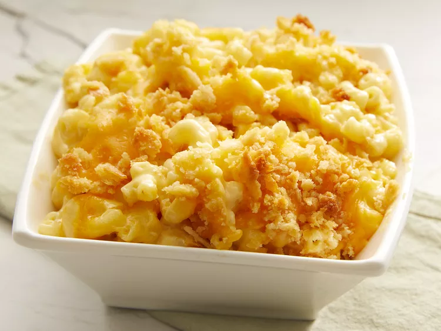

Velveeta Down-Home Macaroni and Cheese

Description
Use Velveeta in this mac and cheese recipe for the perfect balance of cheesy and creamy. The search ends here. Stir in 1/4 cup bacon bits with the cooked macaroni to take this dish over the top.
Ingredients
- Cooking spray
- Flour and butter
- Milk
- Velveeta
- Macaroni
- Cheddar
- Crackers
Steps
- Make a roux with flour and butter, then stir in the milk.
- Once the sauce is thickened, stir in the Velveeta and cooked macaroni.
- Transfer to a prepared baking dish. Top with Cheddar, melted butter, and crackers.
- Bake the macaroni and cheese until heated through.
Back